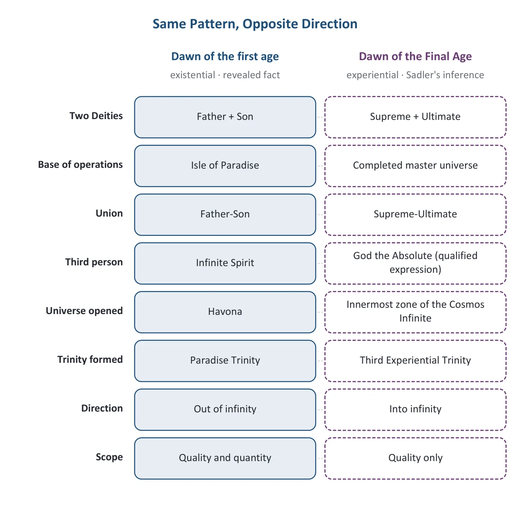

L’Épilogue dans l’éternité et la Postface
Original : Épilogue dans l’éternité (premier à troisième) · Postface (p. 123–146)
DANS CE CHAPITRE
Là où le prologue traitait de ce que la Déité existentielle a fait avant la création, l’épilogue imagine ce que la Déité expérientielle pourra faire au-delà de la création. Distinguant la qualité de la quantité, Sadler se représente Dieu le Suprême et Dieu l’Ultime trinitisant ensemble Dieu l’Absolu, tandis que s’ouvre en même temps le Cosmos Infini. Il envisage ensuite les trois phases de l’Âge Final, les derniers partenariats de la Déité Duelle et les trois derniers niveaux sur lesquels fonctionne la Déité totale, et il conclut, comme il avait commencé, avec l’Infini. Dans la Postface, Sadler qualifie le Livre d’Urantia d’histoire d’amour et d’aventure et désigne Dieu comme son véritable héros.
1. Un nouveau départ à partir de l’impasse (orig., p. 123–124)
Un épilogue répondant au prologue
Le « Prologue dans l’éternité », en tête de l’étude, examinait ce que la Déité existentielle a fait avant la création. Ces actes ont planté le décor de toute l’histoire, dans laquelle la créativité du Paradis déferle vers l’extérieur et ses résultats sont de nouveau rassemblés sur les niveaux suprême et ultime. Maintenant, à l’extrémité opposée, l’épilogue tente de se représenter ce que la Déité expérientielle pourrait faire au-delà de la création : des actes qui percent la Barrière de l’Infini et, dans une certaine mesure, contournent l’Impasse des Absolus. L’épilogue comporte trois parties. La première traite de l’Âge Final, la deuxième des profondeurs de cet âge, et la troisième de ce qui vient après « la fin de la fin ».
Une note de frustration
Sadler reconnait que l’étude principale s’est achevée sur une nette note de frustration. La force irrésistible de l’Absolu Trinité a rencontré le fait inébranlable de l’infinité éternelle et a abouti à une impasse. L’unification de l’Absolu Trinité est une tâche sans fin, et c’est pourquoi la Trinité des Trinités est elle aussi incomplète. Sur son premier niveau, un membre, l’Absolu Trinité, n’est pas unifié ; sur son second niveau, un membre, Dieu l’Absolu, manque complètement.
De plus, le maitre univers, désormais mobilisé comme univers nucléaire, n’a encore aucun cytoplasme autour de lui. L’espace qui l’entoure est encore vide. Chaque nébuleuse du maitre univers a été organisée par des organisateurs de force, qui agissent pour les Maitres Architectes, et Sadler doute que les plans des Architectes s’étendent au-delà des frontières de la création maitresse. Où donc est l’issue ?
2. Séparer la qualité de la quantité (orig., p. 124–125)
La clé que trouve Sadler est la distinction entre qualité et quantité. Il propose d’associer le mot « absolu » à une qualité non diminuée et le mot « infini » à une quantité illimitée. Une fois les deux séparés, une destinée absolue peut être atteinte d’une manière qui n’est pas infinie : limitée en quantité, peut-être, mais complète en qualité.
Son illustration est toute simple. Personne ne peut respirer tout l’air de la terre au cours d’une vie. Pourtant, cette limite de quantité ne signifie pas que l’on ne puisse pas respirer du tout, et elle n’abaisse pas non plus la qualité de l’air que l’on inspire. L’air d’une seule inspiration est de l’air au plein sens du terme.
Havona en est l’exemple. Lors de la trinitisation de l’Esprit par le Père et le Fils, quand Havona vint à l’existence, les Déités versèrent toute la qualité de la perfection divine dans cette création centrale, sans rien retenir. Sa quantité, en revanche, elles ne la rendirent pas infinie ; sinon, tout l’espace éternel aurait été occupé par un seul univers existentiellement parfait. Les Déités limitèrent Havona à un milliard de mondes et à un espace borné. Elles ne firent pas venir le maitre univers à l’existence de manière existentielle, et elles n’éternisèrent pas non plus le Cosmos Infini par un commandement unique. C’est parce que la quantité fut ainsi limitée que tout le développement expérientiel postérieur à Havona devint possible. De la même manière, conclut Sadler, en limitant la part d’absoluité qui pouvait être rendue expérientielle, les Déités ont préparé la voie d’une croissance sans fin.
Le Livre d’Urantia raisonne lui aussi en termes de qualité et de quantité, dans un passage qui traite de la fonction totale de l’Absolu Trinité.
Et il semblerait aussi que l’inconditionné soit aussi illimité, du moins d’un point de vue qualitatif, bien que nous n’en soyons pas aussi surs en ce qui concerne les relations quantitatives.106:6.4
Sadler fait remarquer que la seule alternative à une croissance sans fin est une croissance qui prend fin. Et qu’arriverait-il alors ? Un univers dont la croissance a pris fin est un univers qui n’a plus nulle part où aller.
3. La trinitisation qui ouvre l’Âge Final (orig., p. 125–127)
La symétrie du premier âge et de l’Âge Final
Sadler se propose d’examiner l’Âge Final avec le même soin qu’il a consacré au premier âge dans le troisième prologue. Les deux âges sont symétriques. Le premier âge a une fin, mais n’a jamais commencé dans le temps ; l’Âge Final commence dans le temps, mais ne finit jamais. L’un est une réalité de l’éternité passée, l’autre une réalité de l’éternité future.
Un inventaire de ce qui était actuel à l’aurore du premier âge énumère une paire de Déités existentielles, le Père et le Fils, avec une base d’opérations, l’Ile du Paradis. Unis en tant que Père-Fils, le Père et le Fils ont trinitisé l’Esprit Infini, une Déité coordonnée ; en conséquence, Havona est apparu et la Trinité du Paradis s’est formée (chapitres 1 et 3).
Sadler s’attend à un inventaire semblable à l’aurore de l’Âge Final : une paire de Déités expérientielles, le Suprême et l’Ultime, avec une base d’opérations, le maitre univers achevé. Il croit que l’histoire de l’univers se répètera. Le Suprême et l’Ultime, unis en tant que Suprême-Ultime, trinitiseront Dieu l’Absolu, une Déité coordonnée ; en conséquence, le Cosmos Infini commencera et la Trinité des Trinités sera tissée. Ce qui s’est produit existentiellement dans le premier âge se répèterait ainsi expérientiellement dans l’Âge Final.

Il y a aussi des différences. Comme le Père et le Fils sont tous deux existentiels et infinis, tout ce qu’ils produisent est lui aussi existentiel et infini. Le Suprême et l’Ultime sont des Déités expérientielles, moins qu’infinies ; Dieu l’Absolu, leur produit, serait donc lui aussi une expression expérientielle et qualifiée. Pourtant, tous deux sont tout-puissants, et ils peuvent donc mobiliser toute la réalité expérientielle actualisée que contient le maitre univers achevé. Au chapitre 12, Sadler comparait le grand univers à une balle de tennis et le maitre univers à une grande lune ; tout ce qui va « de la balle de tennis à la lune » serait mis en jeu dans cet acte. La première trinitisation était précréative, la dernière est supercréative. Puisque le niveau ultime est le dernier niveau créatif, explique Sadler, le Suprême-Ultime et Dieu l’Absolu, qui apparaissent après lui, sont des manifestations supercréatives.
Deux frères et un bélier
Sadler garde la scène à l’esprit comme une image unique. Deux frères expérientiels, un ainé et un cadet, chargent sur leurs épaules un énorme bélier et se postent devant un mur portant l’inscription « Infinité ». Dans le bélier est chargé tout le pouvoir acquis en obtenant la souveraineté expérientielle sur le maitre univers entier. Le frère ainé exhorte le cadet à frapper de toutes ses forces, car ils entendent faire une percée. Tous deux savent fort bien que le mur lui-même ne peut être démoli. Mais ils savent aussi qu’ils peuvent y ouvrir une brèche, et qu’ils le feront. Ce qui donne son poids au bélier, c’est toute chose, toute signification et toute valeur expérientielles de l’univers, mobilisées en tant que pouvoir-personnalité.
4. Une nouvelle transformation de la synthèse (orig., p. 127–128)
Thèse sur thèse
Au chapitre 9, Sadler retraçait comment une synthèse antérieure se change en une nouvelle thèse. Quand le fini fut achevé, la synthèse dans l’Être Suprême donna naissance à une nouvelle thèse, la première Trinité expérientielle ; quand l’absonite fut achevé, la synthèse dans Dieu l’Ultime donna naissance à une nouvelle thèse, la seconde Trinité expérientielle. Le Suprême et l’Ultime étaient respectivement « la synthèse du fini total » et « la synthèse de l’absonite total ».
Sadler voit maintenant un nouveau genre de transformation. Dans leur union trinitisante, les deux Déités expérientielles deviennent elles-mêmes de nouvelles thèses. Le Suprême devient la thèse du fini total, l’Ultime la thèse de l’absonite total, et Dieu l’Absolu, qu’ils trinitisent, devient une troisième thèse, la thèse expérientielle de l’absolu (qualifié). La thèse se superpose à la thèse.
Quelque chose de semblable s’est-il déjà produit ? Sadler répond qu’une chose analogue est apparue dans le prologue. En sortant de l’infinité, Dieu a établi le Fils comme la thèse absolue de la Déité et, en tant que Père du Fils, s’est établi lui-même comme la préthèse de la Déité. Le Père-Fils a établi à son tour l’Esprit comme la thèse associative de la Déité. Cette triple superposition culmine dans la Trinité du Paradis, la thèse de la Déité existentielle indivise. De la même manière, estime Sadler, la triple thèse de la Déité expérientielle (Suprême, Ultime et Absolu) trouve une unité qualitative sur le second niveau de la Trinité des Trinités, et, dans ce processus, elle s’étend vers l’extérieur en tant que thèse indivise de la Déité totale, à la fois existentielle et expérientielle.
Semblable, mais pas identique
Sadler insiste à maintes reprises sur le fait que le parallèle est analogue, et non homologue. En trinitisant l’Esprit, le Père-Fils sortait de l’infinité ; en trinitisant Dieu l’Absolu, le Suprême-Ultime cherche à entrer dans l’infinité. Ce que le Père-Fils a accompli à la fois en qualité et en quantité, le Suprême-Ultime ne peut l’accomplir qu’en qualité. Dieu l’Absolu apparait comme une réalité absolue en qualité, mais en quantité et en universalité, il est la manifestation d’un Absolu moins qu’infini.
5. Le Cosmos Infini commence ; la Trinité des Trinités prend forme (orig., p. 128–130)
Le premier versement du Cosmos Infini
Sadler considère l’apparition trinitisée de Dieu l’Absolu comme l’évènement le plus profond de l’histoire de l’univers depuis l’apparition de l’Esprit Infini. De même que l’Esprit Infini est devenu personnel en même temps qu’apparaissait un univers éternel (Havona), de même l’apparition de Dieu l’Absolu s’accompagnera du commencement du Cosmos Infini. La première création est actuellement éternelle ; la dernière création est potentiellement infinie. Puisque le Suprême et l’Ultime peuvent mobiliser les potentiels physiques aussi bien que spirituels, leur union est totale et ne laisse rien de côté. Sadler en infère donc que Dieu l’Absolu apparaitra au moment même où la zone la plus intérieure du Cosmos Infini sera matérialisée.
À quoi ressemblera ce « premier versement » du Cosmos Infini ? Comme il l’a dit au chapitre 15, Sadler pense qu’il ne ressemblera à rien de ce qui est apparu dans la création maitresse. Pour la première fois, même les plans transcendantaux des Maitres Architectes seront eux-mêmes dépassés. Il ajoute toutefois que certains aspects existentiels de l’éternelle Havona pourraient donner un aperçu du caractère de ce nouveau domaine.
Quant à sa taille, nous ne pouvons que la deviner. Le grand univers étant ramené à la taille d’une balle de tennis, le maitre univers était une lune de 3 200 milles de diamètre. Sadler s’attend à ce que la même proportion se répète encore une fois. Réduisez le maitre univers à une balle de tennis, et la zone la plus intérieure du Cosmos Infini égalerait la lune en taille. Et ce n’est là que la zone la plus intérieure, probablement la plus petite. Ses raisons sont les cas antérieurs. Havona est très petit comparé à la taille (mais non à la masse) des superunivers, et le grand univers est petit comparé au maitre univers. Un noyau a toujours été petit à côté du cytoplasme qu’il gouverne.
Le second niveau est rempli
L’apparition de Dieu l’Absolu offre un autre parallèle avec l’apparition de l’Esprit Infini : toutes deux conduisent à la formation d’une Trinité. De même que l’Esprit Infini a achevé la personnalisation de la Déité existentielle et rendu ainsi possible la Trinité du Paradis, de même l’apparition (qualifiée) de Dieu l’Absolu achèverait en fait le second niveau de la Trinité des Trinités. Le Livre d’Urantia dit que l’on soutient diverses théories sur le troisième membre de ce second niveau.
Dieu l’Absolu est indubitablement impliqué dans cette association en tant que personnalité découlant de la fonction finale de l’Absolu Trinité, et, cependant, l’Absolu de Déité est une réalité existentielle possédant un statut d’éternité.106:8.16
Sur le troisième niveau, Sadler lui-même n’est pas certain. Tant que Dieu l’Absolu reste à jamais incomplet au sens quantitatif, pense-t-il, le troisième niveau sera occupé par l’Absolu Universel. Ce jugement repose sur les paroles suivantes du texte.
La déformation de la vérité sera probablement réduite au minimum si le troisième membre de la Trinité des Trinités est conçu comme l’Absolu Universel …106:8.18

Si Dieu l’Absolu achevait un jour sa croissance expérientielle, nous nous trouverions en dehors de l’infinité, au-delà de la fin de l’éternité. Ce que Sadler veut dire, c’est que cela n’arrivera jamais.
6. Les profondeurs de l’Âge Final : trois phases et la troisième Trinité expérientielle (orig., p. 131–134)
Construire des digues pour la pensée
Une fois la Barrière de l’Infini percée, toute l’éternité future s’ouvre à une spéculation sans fin. Pour empêcher la pensée d’être emportée sur une mer de « et si » jusqu’à l’absurdité, Sadler propose de construire des digues autour d’elle. Il divise le développement du Cosmos Infini en trois phases. La Phase Un est la zone la plus intérieure, rendue factuelle en même temps qu’apparait Dieu l’Absolu, et elle correspond au Suprême-Ultime. La Phase Deux est le stade intermédiaire de développement qui suit ; elle peut avoir une fin ou non, et elle correspond à l’Ultime-Absolu. La Phase Trois peut être un stade final purement théorique, correspondant à l’association de l’Absolu et du Père-Infini, le « parachèvement » du cycle de la réalité.
La raison de cette division en trois est simple. Pour contenir les idées de commencement, de milieu et de destinée, ou d’initiation, de réalisation et de consommation, il faut au moins trois compartiments. En pratique, il pourrait tout aussi bien y en avoir sept, ou un million. La triade initiation, réalisation et consommation provient du langage qu’emploie le Livre d’Urantia pour décrire la Trinité des Trinités [106:8.12].
La troisième Trinité expérientielle
Sadler avance la proposition que le second niveau de la Trinité des Trinités est lui-même une autre trinité, la « troisième Trinité expérientielle ». Son argument est la ressemblance des origines. Au commencement, le Père et le Fils, unis en tant que Père-Fils, ont trinitisé l’Esprit, qui achève la Déité existentielle en tant que sa troisième personne, et ces trois sont devenus la Trinité du Paradis. À la fin, le Suprême et l’Ultime, unis en tant que Suprême-Ultime, trinitisent Dieu l’Absolu, qui devient la troisième personne de la Déité expérientielle, et ces trois deviennent la dernière Trinité expérientielle.
Une différence est décisive. L’Esprit « achève » l’actualisation de la Déité existentielle, tandis que Dieu l’Absolu « commence » l’actualisation finale de la Déité expérientielle. La trinitisation par le Père-Fils fut un acte d’infinité sans bornes ; la trinitisation par le Suprême-Ultime est absolue en qualité, mais non infinie en quantité. L’Esprit Infini, éternisé en tant qu’être achevé, a peu de place pour croitre ; Dieu l’Absolu, en qui une partie seulement de l’infinité de l’Absolu de Déité est devenue actuelle, se tient au seuil d’une croissance illimitée. La différence entre le potentiellement infini et l’actuellement infini est la différence entre la croissance et la non-croissance.
Sadler conclut que cette troisième Trinité expérientielle diffère de toutes les autres trinités. C’est la seule qui soit composée uniquement de Déités expérientielles. Comme la Trinité du Paradis, elle a un troisième membre trinitisé, mais elle en diffère en ce qu’elle est encore en train de croitre, de s’étendre et d’être unifiée. C’est aussi la seule trinité contenue à l’intérieur d’une autre trinité, la Trinité des Trinités.
La croissance de Dieu l’Absolu
Sadler prévoit trois relations dans lesquelles Dieu l’Absolu croitra. La première est avec l’Absolu Trinité, qui n’est pas encore unifié. Normalement, cette Trinité devrait être unifiée avant que Dieu l’Absolu puisse apparaitre ; étant apparu le premier par la méthode de la trinitisation, Dieu l’Absolu coopère maintenant avec sa Trinité « ancestrale ». La deuxième est avec le Suprême-Ultime. De même que l’Esprit exprime intensivement le partenariat Père-Fils, Dieu l’Absolu exprime extensivement le partenariat Suprême-Ultime et croit avec lui. La troisième, et la plus caractéristique, est avec l’Absolu de Déité. Comme Dieu l’Absolu n’a été actualisé qu’à partir d’une partie du potentiel infini de l’Absolu de Déité, une infinité intacte de potentiel reste en dehors de lui. Il s’étend vers l’extérieur dans ce potentiel, et cette expansion est sa croissance. Puisque l’espace de croissance est infini, la croissance ne finit jamais.
Sadler et le texte
Le Livre d’Urantia parle de Dieu l’Absolu en tant que « personnalité découlant de la fonction finale de l’Absolu Trinité » [106:8.16]. Si l’on suit l’ordre, l’Absolu Trinité serait d’abord unifié, et Dieu l’Absolu apparaitrait ensuite comme son résultat. Sadler a conscience de cet ordre, et c’est pourquoi il propose l’interprétation selon laquelle Dieu l’Absolu apparait « en avance » par la voie différente de la trinitisation, puis coopère avec l’Absolu Trinité encore non unifié. C’est là une construction propre à Sadler, une tentative de combler une lacune que le texte laisse ouverte. En outre, là où l’original (p. 134) décrit la Trinité des Trinités comme « existentielle-existentielle », il semble s’agir d’un lapsus pour « existentielle-expérientielle » [cf. 0:12.9].
7. Les derniers partenariats de la Déité Duelle (orig., p. 135–139)
La Déité Duelle ouvre la voie, la Trinité consolide
Tout au long de l’étude, Sadler a observé un principe à l’œuvre : la Déité Duelle ouvre la voie, et la Trinité consolide. Le principe tiendra-t-il encore au-delà du maitre univers ? Il reprend les six partenariats que fait connaitre le Livre d’Urantia.
L’association Père-Fils est devenue Fils-Esprit puis Esprit-Suprême et se continue en Suprême-Ultime et Ultime-Absolu, et va même jusqu’à Absolu et Père-Infini — le parachèvement du cycle de la réalité.106:8.12
Sadler range ces six partenariats en quatre catégories : l’éternité (Père-Fils), le maitre univers (Fils-Esprit et Esprit-Suprême), l’après-maitre-univers (Suprême-Ultime et Ultime-Absolu) et l’éternité future (Absolu et Père-Infini). Ces associations commencent existentielles, deviennent progressivement plus expérientielles et s’orientent finalement dans une direction expérientielle-existentielle.

La Procession de l’Initiative
Sadler donne à cette séquence le nom de « Procession de l’Initiative ». L’idée est que Dieu remet à ses coordonnés une part de l’initiative dans l’expression créative de soi, et qu’il veut que cette part soit aussi pleine qu’ils peuvent la porter. Dieu ouvre la réalité lorsqu’il devient Père du Fils Originel, et avec ce Fils il fait les Fils Créateurs. Les Fils Créateurs jouissent d’une pleine filiation envers les Déités du Paradis, mais, dans leurs propres univers évolutionnaires, ils deviennent des pères expérientiels. Dans la relation Père-Fils, l’Esprit a été personnalisé comme l’agent coordonné qui donne expression à Havona ; dans la relation Fils-Esprit, l’Esprit, par l’intermédiaire des Esprits Créatifs, devient le « second créateur » des univers locaux. Ce que le Fils Éternel a « expérimenté » au Paradis dans l’éternité, les esprits de l’Esprit l’expérimentent dans le temps et l’espace. Dans la troisième phase, l’Esprit-Suprême, Sadler s’attend à ce que l’Esprit prenne une initiative nouvelle dans l’espace extérieur, assisté de l’Être Suprême, dont la croissance sera alors achevée. Comme le texte ne dit rien de l’issue, il ne fait pas de spéculation à ce sujet.
Suprême-Ultime et Ultime-Absolu
Les trois derniers partenariats se situent au-delà du maitre univers, puisqu’ils impliquent l’Ultime, qui n’entre effectivement en scène qu’après l’achèvement de toute la création maitresse. Sadler compare le Suprême-Ultime au Père-Fils. Chacun trinitise la troisième personne d’une Déité, chacun ouvre un univers (l’univers de l’éternité et l’univers de l’infinité), et chacun forme une trinité avec cette troisième personne. Mais alors que le Père-Fils initie, réalise et consomme, le Suprême-Ultime initie et réalise en partie, et ne consomme pas.
La Phase Un, ouverte par le Suprême-Ultime, sera immensément longue. Sadler dit qu’y réfléchir revient à demander à un mécanicien qui travaille au dix-millième de pouce de se représenter la taille d’une galaxie située à des millions d’années-lumière. Avec l’Ultime-Absolu, la spéculation devient plus difficile encore, et il procède par analogie. De même que le Fils-Esprit est issu du Père-Fils, l’Ultime-Absolu sortira du Suprême-Ultime et prendra en charge la phase intermédiaire du Cosmos Infini, sa « réalisation ». Pourtant, ce partenariat ne peut guère atteindre même une destinée qualitative ; il peut commencer, mais ne peut jamais être achevé. Même si la zone la plus intérieure apparait soudainement, comme Havona, la croissance qui suit, si elle est séquentielle, n’a pas de fin.
Sadler insère ici une parenthèse. L’Ultime-Absolu n’est pas seulement une affaire d’avenir lointain ; dès maintenant, dans le grand univers, il est réel en tant que niveau de valeur. Le texte décrit ainsi la destinée des Ajusteurs Personnalisés.
… Ces deux types de personnalité sont donc destinés à la superpersonnalité éternelle future du ministère transcendantal dans les royaumes absonites de l’Ultime et du Suprême-Ultime, allant même jusqu’aux niveaux de l’Ultime-Absolu.109:7.5
Un Ajusteur Personnalisé est le fragment même de Dieu qui fusionne avec nous, désormais personnalisé. Si de tels Ajusteurs peuvent servir jusqu’au niveau de l’Ultime-Absolu, raisonne Sadler, les finalitaires aussi y fonctionneront, avec assez de temps et de croissance.
Le premier et le dernier partenariat
Le partenariat final, l’Absolu et le Père-Infini, est le « parachèvement » du cycle de la réalité. Sadler y voit une association existentielle-expérientielle. Existentiellement, elle est toujours présente ; expérientiellement, elle est toujours lointaine ; existentiellement-expérientiellement, elle est une « réalité en devenir ». Si loin que progresse l’actualisation, le potentiel qui ne sera jamais exprimé n’en est pas le moins du monde réduit. S’il s’agit d’une relation de pure éternité, parler de croissance par comparaison avec le passé ou le futur perd tout sens. Comme le dit Sadler, la relation n’est peut-être pas au-delà du concept, mais elle est assurément au-delà du concept compréhensible.
8. Les trois derniers niveaux de fonction de la Déité totale (orig., p. 139–142)
Au-delà des sept niveaux
Le Livre d’Urantia dit que la Déité totale fonctionne sur sept niveaux [0:1.3]. Dans le deuxième prologue, Sadler a examiné les niveaux statique, potentiel et associatif, et, dans l’étude principale, les niveaux créatif et évolutionnaire tournés vers l’extérieur ainsi que les niveaux suprême et ultime tournés vers l’intérieur. Pourtant, le niveau ultime est le dernier niveau créatif, et Dieu l’Absolu est supercréatif. Aucun des sept niveaux n’est appelé niveau absolu ; le niveau absolu est mentionné comme le niveau que la Trinité du Paradis a atteint existentiellement.
Ce niveau est celui de la Trinité atteint existentiellement par les Déités du Paradis, mais ce troisième niveau d’expression de Déité unifiante n’est pas expérientiellement pleinement unifié.0:1.13
Sadler croit que, jusqu’à ce que les Déités expérientielles soient factualisées, ces sept niveaux sont les seuls qui existent, mais qu’une fois les trois Déités expérientielles factualisées, trois niveaux supplémentaires de fonction de la Déité totale apparaitront. La Déité existentielle surgit à l’intérieur de l’infinité et s’en éloigne vers l’extérieur ; la Déité expérientielle surgit en dehors de l’infinité et s’efforce d’y pénétrer de force. Si la Déité existentielle devait retourner à l’infinité, elle retracerait son chemin du niveau associatif au potentiel, puis de nouveau au statique. L’approche de la Déité expérientielle est différente. Les trois niveaux que nomme Sadler sont le Niveau Réassociatif, le Niveau Potentiel en Actualisation et le Niveau Statique-Dynamique.

Images en miroir
Les trois derniers niveaux sont les images en miroir des trois premiers. Le réassociatif (8) répond à l’associatif (3) ; le potentiel en actualisation (9) répond au potentiel (2) ; et le statique-dynamique (10) répond au statique (1). Sadler explique que la destinée reflète la source : les valeurs absolues restent les mêmes, et seules les significations changent. La valeur de l’infini ne s’altère pas, mais les relations de l’infini, qui sont ses significations, peuvent changer presque sans limite.
Le meilleur exemple du niveau réassociatif est la Trinité des Trinités. Si le niveau associatif est représenté par la Trinité du Paradis, qui unifie absolument la Déité existentielle, alors, sur le niveau réassociatif, toute actualisation de la Déité, existentielle ou expérientielle, est de nouveau rassemblée. Expérientiellement, la Trinité des Trinités est toujours incomplète, mais, puisque son membre la Trinité du Paradis est existentiellement infinie, cette incomplétude peut toujours être compensée.
Mais, indépendamment de tout cela, la Trinité originelle du Paradis est potentiellement infinie, puisque le Père Universel est effectivement infini.0:12.9
Pour le niveau potentiel en actualisation, Sadler choisit le nom avec soin. Parler de « potentiel actualisé » impliquerait que le potentiel a été épuisé ; comme le potentiel n’a pas de fin, la forme progressive « en actualisation » est la bonne. Le plein accomplissement quantitatif de ce niveau exigerait trois choses : que la capacité de l’Absolu Non Qualifié soit entièrement épuisée, de sorte que le Cosmos Infini devienne un univers actuel sans extérieur ni fin ; que la capacité de l’Absolu de Déité soit de même épuisée, de sorte que Dieu l’Absolu soit achevé en tant que personne de Déité expérientielle-absolue coordonnée avec le Fils Éternel ; et que les deux soient parfaitement synthétisés en tant que pouvoir-personnalité. Cela reviendrait à accomplir expérientiellement ce que l’Absolu Universel fait existentiellement.
L’improbabilité d’atteindre une destinée infinie n’empêche nullement de se former des idées sur cette destinée …106:7.9
Sadler dit qu’il n’y a pas lieu de se décourager de ce que ce niveau ne puisse jamais être atteint quantitativement. Si tout le potentiel était actualisé, toute croissance, tout changement et toute aventure prendraient fin : un éternel aujourd’hui sans lendemain. Dieu, dans sa sagesse, l’a évité. Son plan prévoit un univers à jamais jeune et en croissance, une création toujours au seuil d’une aventure nouvelle, un univers vivant perpétuellement à l’aube d’un printemps sans fin.
Le niveau statique-dynamique
Le dernier niveau est l’ultime élan de la Déité expérientielle, et peut-être des créatures expérientielles, vers le Père en tant qu’Infini. Au départ, Sadler imaginait Dieu en tant qu’Infini dans « le moment statique de l’éternité », au centre de l’Âge Zéro (chapitre 2).
L’infinité est remplie par l’Infini ; l’Infini englobe l’infinité. C’est le moment statique hypothétique de l’éternité …105:1.5
Maintenant, en contrepartie, il imagine un « moment statique-dynamique hypothétique de l’éternité » qui existe en théorie dans l’éternité future. Si ce moment pouvait être atteint, nous connaitrions le Père en tant qu’Infini. Comme il ne le peut pas, nous trouverons le Père en tant qu’Absolu, mais continuerons à jamais à le chercher en tant qu’Infini. Sadler comprend l’« ombre de l’infinité » qui s’étend sur le caractère illimité de la réalité potentielle comme la présence de l’Absolu Universel. Ce mystère grandit avec l’univers qui grandit, et il pourrait s’approfondir plus vite que ne croissent les finalitaires eux-mêmes.
9. Après la fin de la fin : conclure avec l’Infini (orig., p. 143–144)
Source et destinée
Le troisième épilogue est bref. Sadler emprunte au Livre d’Urantia son image de toute la réalité comme une vaste ellipse.
Quand le mental humain cherche à pénétrer le mystère d’éternité de l’origine et de la destinée de tout ce que l’on appelle réel, il peut lui être utile d’aborder le problème en concevant l’éternité-infinité comme une ellipse à peu près illimitée produite par une cause absolue unique fonctionnant tout au long de ce cycle universel de diversifications sans fin, en cherchant toujours quelque potentiel de destinée absolu et infini.105:0.1
Ce que le premier prologue appelait « source », le dernier épilogue l’appelle « destinée », mais, au commencement comme à la fin, l’objet de la recherche est la même Source-Destinée : l’Infini, que nous connaissons le mieux sous le nom de Dieu. De même que Dieu a conféré sa nature absolue à son Fils premier-né et a partagé la souveraineté sur toute la création dans l’Esprit et en tant que Trinité, de même il est engagé dans l’œuvre éternelle de se révéler et de partager sa nature avec tous ses fils et les fils de ses fils.
Les valeurs demeurent, les significations grandissent
Si loin que s’étendent les forces et les personnalités de la création, du Paradis jusqu’aux profondeurs du Cosmos Infini, la valeur de Dieu n’augmente ni ne diminue. L’Infini ne change pas. Mais, pour chaque être qui prend part à l’aventure, la signification de Dieu est modifiée, enrichie et élargie.
Nous ne comprenons pas comment la valeur d’une chose infinie et divine pourrait être accrue, mais nous découvrons que les significations peuvent être modifiées, sinon accrues, même dans les relations de la Déité infinie.115:2.2
Trois aventures, trois Pères
Sadler résume l’avenir de l’ascendeur en trois aventures. Dans l’Aventure Suprême, nous atteignons le Paradis et trouvons Dieu, faisons l’expérience de toute la Déité finie en trouvant le Suprême à la clôture du deuxième âge, et en venons à comprendre le Père tel que des créatures finies peuvent le connaitre, le Père en tant que Fini. L’Aventure Ultime est la recherche du Père superfini, le Père en tant qu’Absonite. Elle prend un temps extrêmement long, mais, parce qu’elle a une limite lointaine, nous en viendrons un jour à connaitre effectivement l’Ultime. La dernière, l’Aventure Absolue, n’a pas de fin. Nous trouverons véritablement Dieu en tant qu’Absolu, mais nous n’achèverons jamais cette découverte, car l’exploration de l’infinité de Dieu doit être sans fin.
Tôt ou tard, toutes les personnalités de l’univers commencent à se rendre compte que la recherche finale de l’éternité est l’exploration sans fin de l’infinité, le voyage de découverte qui n’aura jamais de fin dans l’absoluité de la Source-Centre Première.106:9.11
Nous savons pourtant que l’Infini existe et est réel, précédant la Source Première et suivant la destinée finale. Le passage que cite Sadler dit de quel genre de connaissance il s’agit.
Dieu, votre Père et mon Père, est cette phase de l’Infini que nous percevons dans notre personnalité comme une réalité expérientielle actuelle, mais le JE SUIS subsiste toujours comme notre hypothèse de tout ce que nous sentons inconnaissable dans la Source-Centre Première.105:1.6
Sadler clôt l’épilogue sur la pensée que, même à la fin des temps, les paroles d’Hébreux 11:1, « la foi est la substance des choses que l’on espère », resteront vraies.
10. Postface : une histoire d’amour et d’aventure (orig., p. 145–146)
Dans son avant-propos, Sadler comparait le Livre d’Urantia à une symphonie (chapitre 1). Dans la Postface, il compare le même livre à un roman, un récit d’amour et d’aventure. Ce qui l’a retenu tout au long de son étude, c’est d’une part l’amour divin et, d’autre part, un esprit d’aventure qui semble se trouver à la racine des desseins de Dieu.
Le Dieu que dépeint Sadler donne sans compter, mais n’est jamais complaisant. Celui qui donne tant par amour pose aussi des défis à ceux qu’il aime. Dieu est un créateur de problèmes, et c’est en les résolvant que ses enfants grandissent. Tout en restant lui-même immuable, Dieu est toujours la cause du changement. Il place un levain nouveau et stimulant dans ce qui est ancien et établi, et, à mesure que l’ancien et le nouveau se défient et se répondent, l’un et l’autre dépassent leurs limites antérieures. C’est aussi une reformulation, en termes du caractère divin, du principe thèse-antithèse-synthèse qui a parcouru toute l’étude. Pour partager l’aventure de la croissance avec chacun de ses enfants, il fait habiter son esprit en nous.
C’est pourquoi Sadler dit que le véritable héros de cette histoire est Dieu : la personnalité la plus intéressante et la plus fascinante de tout le vaste univers, l’auteur de l’amour et la véritable source de l’esprit d’aventure. Quand il est venu comme l’un d’entre les hommes, il a dit : « Suis-moi », et quiconque ose le suivre peut le faire.
Le courage et l’humilité de la spéculation
Sadler ne cache pas que son étude a été une spéculation audacieuse. Il trouve du réconfort dans deux passages. L’un dit que la révélation laisse délibérément certaines choses non dites.
Une telle expansion conceptuelle ne serait guère désirable, car elle priverait les penseurs mortels du prochain millénaire du stimulant fourni à la spéculation créative par la révélation partielle des concepts précédents.30:0.2
L’autre est le passage qu’il a placé à la dernière ligne de son livre. Le mental humain voit indistinctement et comprend lentement, et ses conjectures contiennent assurément bien des erreurs. Pourtant, même à la fin, une consolation demeure.
Toutes les fabulations des hommes au sujet de l’univers peuvent ne pas correspondre à des faits, mais elles contiennent une grande, une très grande partie de vérité.196:3.31
Pour les lecteurs qui ont suivi ce commentaire, ces paroles suggèrent aussi une manière de lire. La chronologie des âges de Sadler, son noyau et son cytoplasme, sa troisième Trinité expérientielle et ses dix niveaux de fonction de la Déité ne sont pas des faits révélés, mais la spéculation d’un homme qui a pris la révélation pour fil conducteur. Même s’ils ne devaient pas se révéler être des faits, la vérité qu’ils transmettent, et qui nous invite à lire l’univers comme une histoire de l’amour et de l’aventure de Dieu, demeurera longtemps en eux.
Points clés
- L’épilogue est le pendant du prologue. Là où le prologue traitait de ce que la Déité existentielle a fait avant la création, l’épilogue imagine ce que la Déité expérientielle fait au-delà de la création.
- Sadler résout l’impasse en séparant la qualité de la quantité. Une destinée absolue peut être pleinement atteinte en qualité même lorsqu’elle est limitée en quantité, et Havona en est le prototype.
- Sadler infère que le Suprême et l’Ultime, unis en tant que Suprême-Ultime, trinitisent Dieu l’Absolu, et que la zone la plus intérieure du Cosmos Infini apparait avec lui. C’est analogue, mais non homologue, à la trinitisation de l’Esprit par le Père-Fils.
- Avec l’apparition de Dieu l’Absolu, la Trinité des Trinités acquiert son second niveau complet, que Sadler considère comme la « troisième Trinité expérientielle ». Suivant le texte, il estime que le troisième niveau est l’Absolu Universel.
- Sadler lit les six partenariats de la Déité Duelle nommés dans le Livre d’Urantia [106:8.12] comme la « Procession de l’Initiative », et il fait correspondre les trois derniers partenariats aux trois phases du Cosmos Infini (initiation, réalisation, consommation).
- Aux sept niveaux de la Déité totale, Sadler ajoute les niveaux réassociatif, potentiel en actualisation et statique-dynamique, qu’il considère comme les images en miroir des trois premiers. Tous trois sont des concepts de Sadler.
- La valeur de Dieu ne change pas, mais sa signification grandit. Nous trouverons le Père en tant qu’Absolu, mais continuerons à jamais à le chercher en tant qu’Infini.
- Dans la Postface, Sadler désigne Dieu, la source de l’amour et de l’aventure, comme le véritable héros de toute l’histoire, et il espère que ses spéculations, même là où elles ne sont pas des faits, contiennent beaucoup de vérité.